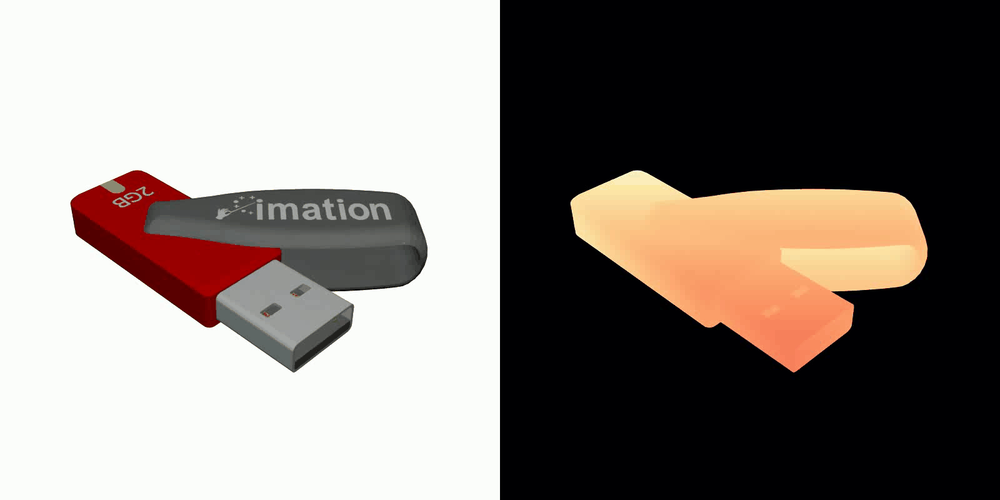
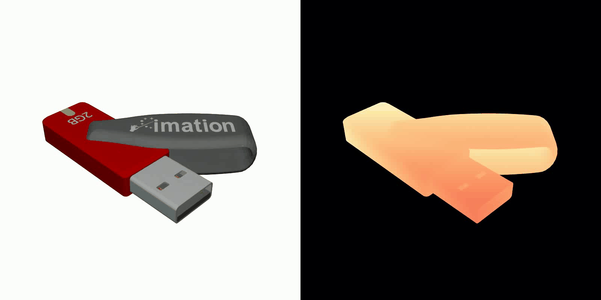
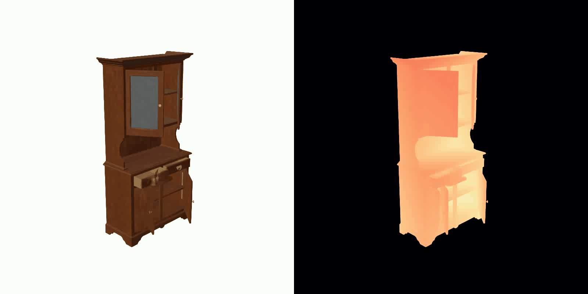
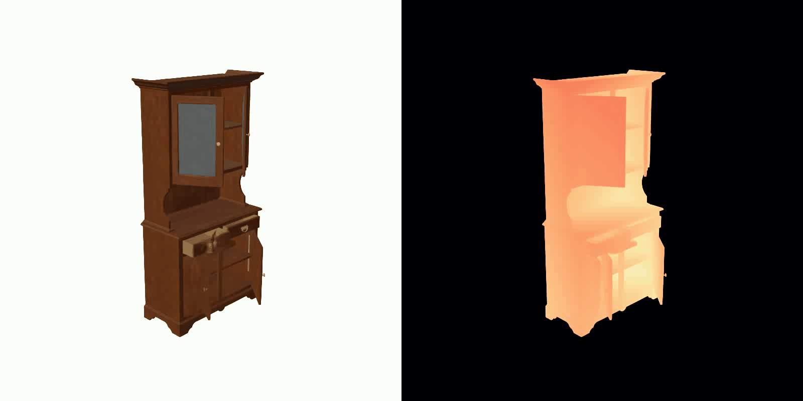

Part²GS: Part-Aware Modeling of Articulated Objects Using 3D Gaussian Splatting

Abstract
Articulated objects are common in the real world, yet modeling their structure and motion remains a challenging task for 3D reconstruction methods. In this work, we introduce Part²GS a novel framework for modeling articulated digital twins of multi-part objects with high-fidelity geometry and physically consistent articulation. Part²GS leverages a part-aware 3D Gaussian representation that encodes articulated components with learnable attributes, enabling structured, disentangled transformations that preserve high-fidelity geometry. To ensure physically consistent motion, we propose a motion-aware canonical representation guided by physics-based constraints, including contact enforcement, velocity consistency, and vector-field alignment. Furthermore, we introduce a field of repel points to prevent part collisions and maintain stable articulation paths, significantly improving motion coherence over baselines. Extensive evaluations on both synthetic and real-world datasets show that Part²GS consistently outperforms state-of-the-art methods by up to 10x in Chamfer Distance for movable parts.
Part²GS Architecture
Part2GS constructs articulated 3D objects from multi-view images using 3D Gaussian Splatting for joint part discovery and motion modeling. The framework consists of two stages: (1) Part-Aware Gaussian Generation: We generate canonical Gaussian representations independently for each joint state (𝓘₀, 𝓘₁) and subsequently infer per-Gaussian part identities implicitly through multi-view geometric cues. Specifically, each Gaussian 𝓖ᵢ is augmented with a compact, learnable part-identification parameter ψi that enables unsupervised clustering of Gaussians into meaningful, physically consistent parts. (2) Articulation Learning: Once the part-aware canonical Gaussian representation is learned, we model the transformations of each articulated part using SE(3) rigid body motions.

To ensure stable and interpretable motion, we additionally introduce physical constraints including contact regularization, velocity consistency, and vector-field alignment. These physical constraints provide a simple yet effective regularization against self-collision while keeping per-part motion rigid and coherent.
Results

Quantitative Results on Paris. Lower (↓) is better across all metrics. highlights best performing results. Objects with * are seen categories trained in Ditto. F indicates wrong motion type predictions. Pos Err is omitted for objects with only prismatic joints (Blade, Storage*, and Real-Storage).

Results on DTA-Multi and ArtGS-Multi. Lower (↓) is better across all metrics. highlights best performing results. Pos Err is omitted for for objects with only prismatic joints (Table 4 parts).
Qualitative Results
 



Rendering Results of Simple (two-parts) objets. Each example shows smooth articulation between rigid parts with accurate motion boundaries and minimal distortion. Our method captures part-aware geometry and consistent transformations, even in minimal degrees of freedom, demonstrating the effectiveness of Part²GS in simple settings.


 

Rendering Results of Complex (Multi-parts) objets. Our method captures accurate part-aware geometry and consistent transformations, even for complex objects, demonstrating the effectiveness of Part²GS.

Qualitative Comparison of Part Discovery Across Object States (columns) and Discovery Methods (rows). Part²GS accurately isolates moving parts across start, end, and canonical states.

Part²GS Ablations on the two most complex objects in our evaluation, Table (5 parts) and Storage (7 parts). Lower (↓) is better on all metrics. shows results with all Part²GS modules, while highlights severe failures caused by removing components of our method. Severe failures are defined as metrics that are more than 5× worse than the full Part²GS for the same object.
BibTeX
@misc{yu2025part2gspartawaremodelingarticulated,
title={Part$^{2}$GS: Part-aware Modeling of Articulated Objects using 3D Gaussian Splatting},
author={Tianjiao Yu and Vedant Shah and Muntasir Wahed and Ying Shen and Kiet A. Nguyen and Ismini Lourentzou},
year={2025},
eprint={2506.17212},
archivePrefix={arXiv},
primaryClass={cs.CV},
url={https://arxiv.org/abs/2506.17212},
}